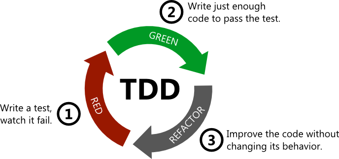

Plan warsztatów
Rodzaje testów
- jednostkowe
- integracyjne
- end-to-end
Testy jednostkowe
Testuje małą jednostkę oprogramowania (funkcję, klasę) w odosobnieniu od innych części.
Testy integracyjne
To testy które wykonujemy w celu wykrycia błędów w interfejsach i interakcjach pomiędzy modułami.
Przykład z życia

Testy end-to-end
Weryfikują działanie oprogramowania z punktu widzenia końcowego użytkownika
Piramida testów Cohn-a
Na co poświęcać uwagę
- 70% - jednostkowe
- 20% - integracyjne
- 10% - end-to-end
Dlaczego warto je pisać ?
- upewniamy się że nasz program działa poprawnie
- chronimy się przed regresjami (błędami powstającymi podczas modyfikacji kodu)
- gwarantujemy że program spełnia oczekiwania użytkownika
- dobrze napisane testy dokumentują kod
Dlaczego nie piszemy testów ?
- nie mamy czasu
- szef lub klient nie pozwala
- nie wiemy od czego zacząć
Jakie powinny być testy jednostkowe ?
- proste w napisaniu
- czytelne
- niezawodne (wywala się tylko jeśli jest bug)
- szybkie (< 20 sek)
Anatomia testu jednostkowego
- przygotuj środowisko
- wywołaj akcję
- zweryfikuj wynik
W jaki sposób weryfikujemy wyniki
- sprawdzamy stan (wartości zmiennych są prawidłowe ?)
- sprawdzamy działanie (np. wywołanie innych metod)
Co trzeba testować ?
- przede wszystkim logikę biznesową
- happy path
- przypadki brzegowe
Czego nie trzeba testować ?
- zbyt prostych metod (np. get/set)
- bibliotek zewnętrznych
Pokrycie kodu - co to i po co to nam ?
- jest to % linijek kodu wzkonywanzch podczas testów
- żeby wiedzieć jaki kolejny test napisać :)
Mocki, szpiegi - co to jest ?
Jak pisać testowalny kod ?
- stosować zasadę jednej odpowiedzialności
- ograniczać ilość efektów ubocznych
- nie polegać na globalnych danych
TDD
- skrót od Test-Driven Development
- skupia się na procesie napisania testów
- najpierw test, potem implementacja (i tak w kółko :))
Krąg życia TDD
BDD
- skrót od Behaviour-driven development
- definiuje strukturę formułowania wymagań
- dopełnia się z TDD
BDD, Given-When-Then
- Given - ustawia kontekst (np. określa wartości początkowe)
- When - opisuje akcję lub zdarzenie
- Then - określa oczekiwane wynikach
Framework Jest
- prosty w użyciu
- praktycznie nie wymaga konfiguracji
- ma w sobie praktycznie wszystko - runner, strukturę, asercje
- rozszerzalny